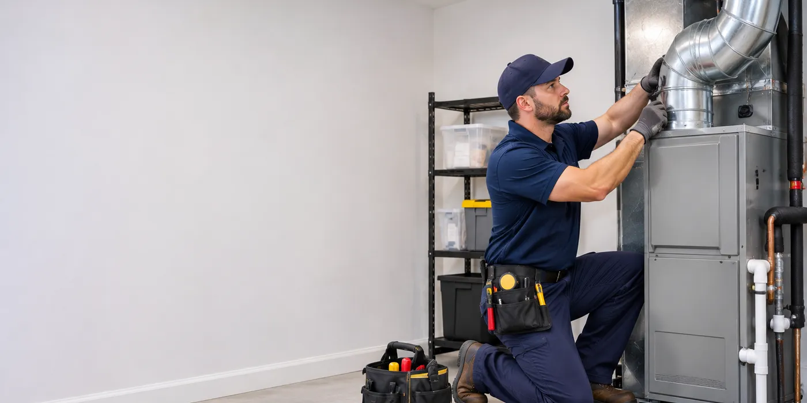

Thermostat Repair in Austin, TX
Wall control diagnostics, wiring checks, and thermostat repair across Austin.
Older Austin homes, remodeled rooms, and properties with original wall controls often develop thermostat trouble before the rest of the cooling equipment shows an obvious fault. A thermostat can lose its temperature calibration, develop a loose wire behind the wall plate, or stop communicating with the indoor unit after a battery, power, or programming issue. We cover Austin, Rollingwood, West Lake Hills, and Lost Creek from our location on Commercial Park Dr.
A control installed in a sunny hallway can read warmer than the living room, while a thermostat near a kitchen, exterior door, or supply register can react to heat or cool air that does not reflect the rest of the house. Older mercury-style controls, programmable units, and newer Wi-Fi thermostats each use different terminals, settings, and power arrangements, so the screen alone does not identify the fault.
Thermostat repair should not wait when the wall control will not start or stop cooling correctly, because that small control is sending the command for the entire system to run, cycle, or remain off. A display setting that is merely inconvenient may be less urgent, but a thermostat that leaves the home too warm or keeps the equipment running needs a proper check.
Blank screen and wrong temperature
A blank thermostat screen is one of the most common calls. Sometimes the issue is a depleted battery, corroded battery contact, tripped power supply, or a loose common-wire connection behind the wall plate. A screen that is lit but will not respond to buttons, loses its clock, or repeatedly reconnects to Wi-Fi points to a different set of controls and power checks.
Another common report is, “The thermostat says it is cool, but the room is hot,” or “The number on the screen is not the same as the thermometer.” That can come from sensor calibration, the thermostat location, a damaged sensor, a programmed schedule, or a control signal that is not reaching the indoor equipment. We also hear about cooling that starts but shuts off too soon, a fan that runs when the thermostat is off, and a thermostat that will not switch out of one mode.
These symptoms can look nearly identical from the wall, but a battery contact, sensor, terminal, control wire, and failed thermostat are separate faults with different parts and labor involved. Looking at the display and testing the terminals is how we separate a setting issue from a component or wiring issue.
Control wiring diagnostic callout
During a thermostat diagnostic callout, we start with the wall control, the temperature setting, the operating mode, and the power source. We remove the faceplate where appropriate, inspect the R, C, Y, G, and other connected terminals, check for loose conductors or damaged insulation, and test the low-voltage control circuit. Most residential thermostat circuits use about 24 volts, and a meter reading at the thermostat helps show whether power is reaching the control and whether the call for cooling is leaving it.
We compare the thermostat reading with the room temperature, review schedules and hold settings, and check whether the indoor equipment responds when the control makes a call. A straightforward screen, battery, setting, terminal, or calibration check commonly takes 30 to 60 minutes. Battery replacement, terminal tightening, programming corrections, and a compatible thermostat replacement can often be handled on the visit when the needed part is available; concealed wiring damage, an incompatible smart control, or a special-order thermostat may need a follow-up appointment.
Control wiring and wall access
The condition and age of the thermostat matter because older controls may use terminals or mounting plates that do not match current replacements. A basic issue at the battery compartment or a loose wire at the wall plate is usually more direct than a failed internal sensor, damaged control board connection, or a thermostat that requires a specific compatible model. If the existing control has been discontinued, the replacement choice can depend on the wiring already present behind the wall.
Access also affects the work. A thermostat on an open interior wall is easier to inspect than wiring routed through a finished wall, behind cabinetry, or through a return chase. A wire that has broken inside the wall, a terminal that has overheated, or a replacement control that has to be ordered adds steps beyond a standard wall-control check. We explain which component is causing the problem and whether the repair can be completed with the parts available.
Model number and wall plate
Before calling, check the model number on the thermostat faceplate, back cover, or label behind the wall plate if it can be removed safely. Let us know which room has the control, whether the screen is blank or lit, and whether the cooling equipment is running now, running constantly, or not responding at all. The approximate age of the thermostat, the make printed on its display or housing, and a photo of the wiring terminals can help us prepare for the right type of control. Mention whether the thermostat is on a high wall, behind furniture, or near a stairwell so we know what access is involved. Call Air Conditioning Austin at (512) 635-7760 before a faulty thermostat leaves the cooling equipment cycling continuously or prevents it from turning on when the indoor temperature rises.
Hours of operation
| Monday | Open 24 hours |
| Tuesday | Open 24 hours |
| Wednesday | Open 24 hours |
| Thursday | Open 24 hours |
| Friday | Open 24 hours |
| Saturday | Open 24 hours |
| Sunday | Open 24 hours |
Not what you were after? Go back to the home page or get in touch.